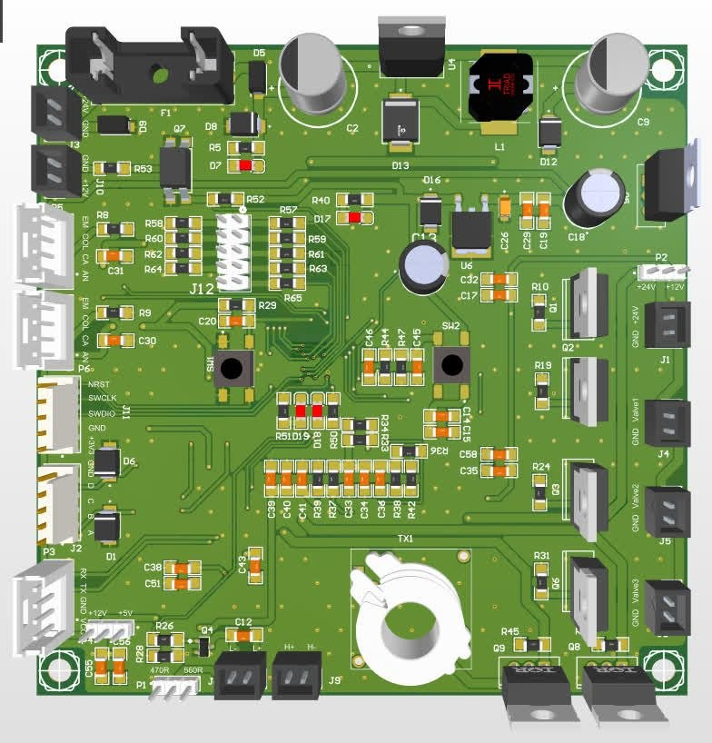
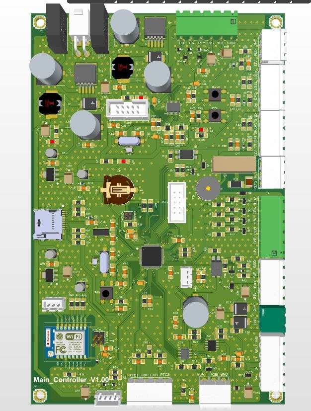
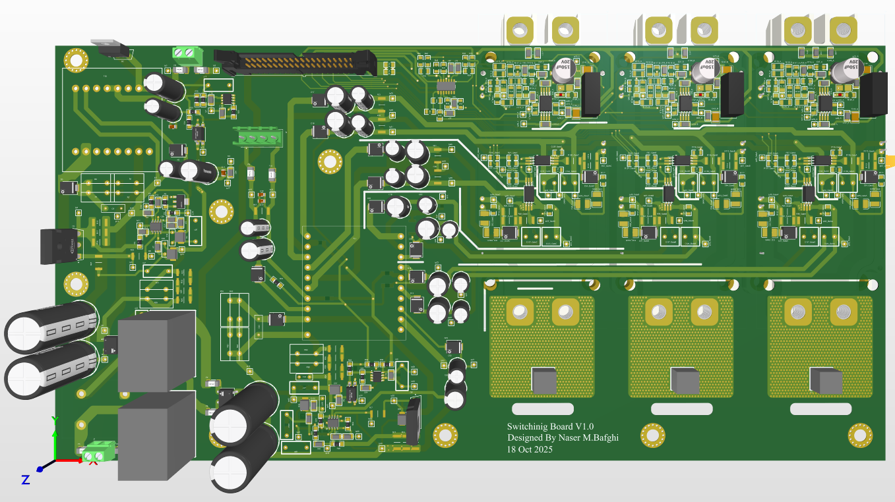
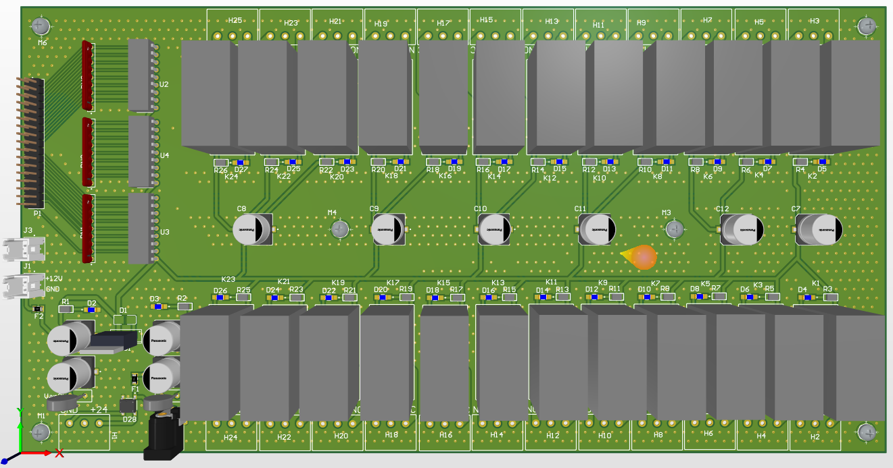

Power Electronics
Power converters, switching power supplies, inverters and power-stage development.
Designing power electronics, industrial hardware and reliable PCB-based systems.
ABOUT ME
I am a Power Electronics Engineer with a Master's degree in Electrical Engineering from K. N. Toosi University of Technology.
I currently work as an R&D Engineer, focusing on power electronics, hardware development, PCB design and industrial electronic systems.
My experience includes power converters, switching power supplies, control and power boards, voltage sensing circuits, EMI filters, inductors, transformers and embedded control systems.
I also have hands-on experience in troubleshooting, repair, reverse engineering, simulation and hardware prototyping.
EXPERTISE
Power converters, switching power supplies, inverters and power-stage development.
Industrial and control boards with practical layout and EMC considerations.
Control, measurement, communication and interface electronics.
STM32 and AVR microcontrollers with embedded C/C++ development.
EMI filter design and practical PCB-level noise and compatibility considerations.
Troubleshooting, repair, analysis and reverse engineering of electronic boards.
EXPERIENCE
Electro Kavir Iran
Power-electronics R&D for a 100 kW grid-connected solar inverter, with responsibility for key hardware subsystems from design through prototype evaluation.
Saz Ab Andish Consulting Engineers
Technical supervision and engineering activities related to electrical systems.
SELECTED PROJECTS

Control board for a dental unit, including chair height adjustment, piezoelectric handpiece control, water suction pump and related functions.

Power and control board design for an induction furnace, shown in both 3D and PCB layout views.

Switching board design, presented as a 3D model and detailed PCB layout.

Multi-channel relay board designed as part of an industrial control hardware project.
RESEARCH & PUBLICATIONS
TOOLS & TECHNICAL SKILLS
EDUCATION
K. N. Toosi University of Technology
Isfahan University of Technology
CONTACT
Let's discuss your requirements and find a practical engineering solution.
SEND A MESSAGE